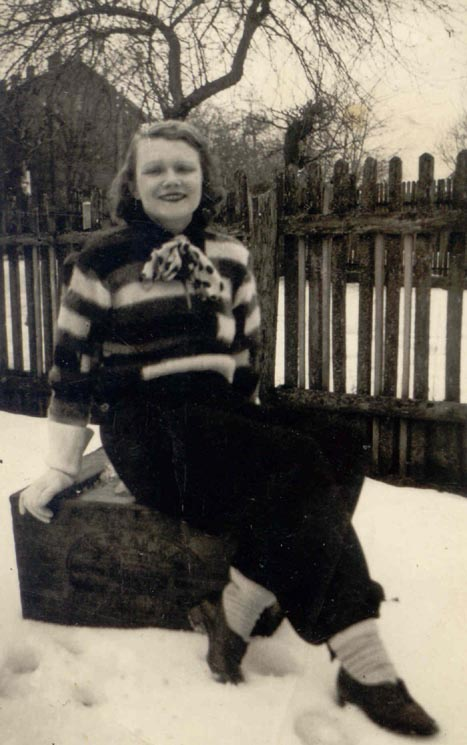
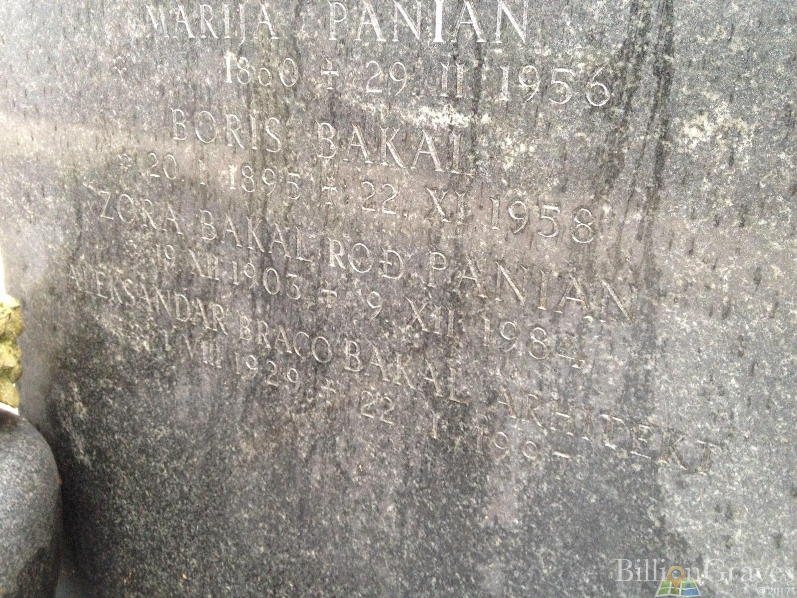

Родилась 19 декабря 1903 году в Будапеште в хорватской семье.
Отец - Эрнест Паниан 1877-1941.
Мать - Аделя Кефер, первая жена Эрнеста.
Примерно в 1926 году вышла замуж за Абрама (Бориса) Лазаревича Баккала (Бакала), которому родила дочь Зорку Бакал в 1928 году, которую все звали Бебе и сына Александра в 1929 году.
До 1957 года жили в разных городах Хорватии.
Вместе с мужем перехали в Буэнос-Айрес в 1957 году. Дети не поехали в Аргентину и остались в Загребе. После смерти мужа жила в Аргентине.
Умерла 19 декабря 1984 года в Буэнос-Айресе. После ее смерти урны с ее прахом и прахом ее мужа были перевезены в Загреб, где и захороненны на Мирогойском кладбище.


